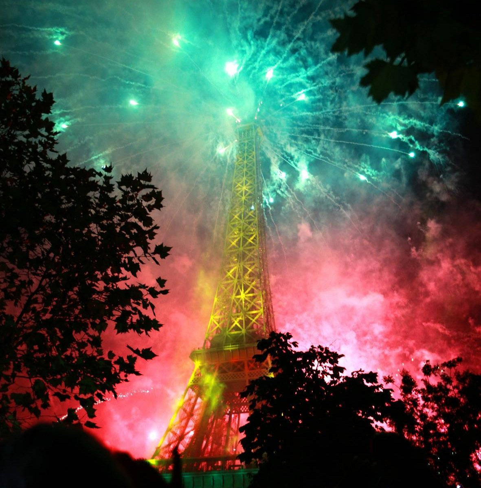

French culture places a high value on quality of life, art, and conversation. A typical day often revolves around taking time for meals and enjoying social interactions.

France has made a significant mark on the world through its contributions to art, fashion, philosophy, and history. These aspects continue to influence global trends and remain a core part of the French experience.